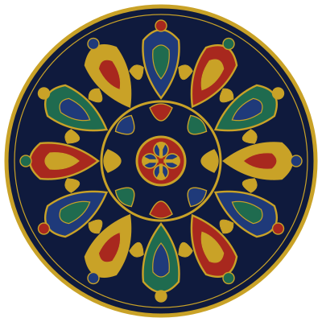

Magisterium Conciliare Romanum
The extraordinary magisterium of the Latin Church and its foundations — in Latin and Greek, with an English translation.
Volume I
The Continuity of Faith
Eastern dogmas and their Latin expressions: the seven councils received by East and West, with Latin witnesses before and after the Gregorian reform.
Volume IIThe Latin Church’s Own Magisterium
From the Gregorian reform to Vatican II: dogmatic and supplementary ecumenical councils.
Volume IIIPre-Gregorian Latin Foundations
African, Iberian, Gallic, Roman, Carolingian and reform synods, 251–1080.